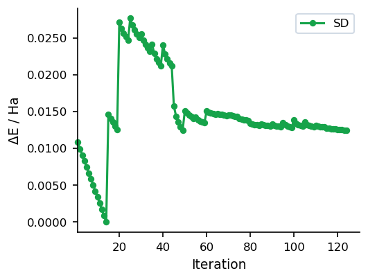
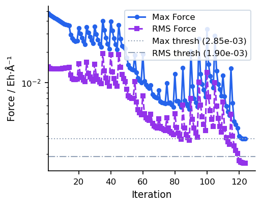

Steepest Descent (SD)
Overview
The steepest descent optimizer moves each step directly along the negative gradient direction, scaled by a fixed maximum step length. It is the simplest first-order method and requires no history or Hessian information. Invoked with method=sd inside #opt().
Because each step is independent and the direction is always the steepest downhill direction, SD is highly robust for severely distorted geometries but converges slowly near a minimum due to its tendency to zigzag. For better convergence after the initial descent, consider switching to CG or using the automatic SD/CG fusion.
Parameters
| Parameter | Type | Default | Description |
|---|---|---|---|
max_step |
float | 0.2 |
Maximum step length in Angstrom. |
max_iter |
int | 256 |
Maximum number of optimization cycles. |
sd_max_iter |
int | 50 |
Maximum SD iterations before stopping (when used as a standalone method). |
write_traj |
bool | False |
Write intermediate geometries to a trajectory file. |
traj_every |
int | 1 |
Write trajectory frame every N steps. |
verbose |
int | 1 |
Output verbosity level. |
Input Example
#model=uma
#opt(method=sd)
#device=gpu0
C -0.77812600 -1.06756100 0.32105900
C 1.30255300 0.05212000 -0.02829900
C -0.97199300 1.45624900 0.82365700
C 1.98122900 -0.41843300 1.25017500
C 2.26403300 0.43516800 -1.13310700
N 0.29116400 -0.87682100 -0.50039900
N -2.01916300 -1.37200600 -0.23311200
O -1.66473400 1.63022300 -0.40183700
H -2.25863200 0.87013900 -0.47589900
H 0.02784900 -0.67831200 -1.45849500
H -0.60975900 -1.36785600 1.34117800
H 0.68126400 0.91830000 0.28694100
H -2.57326300 -2.05736100 0.25741200
H -2.05242800 -1.50454200 -1.23382300
H -0.36899300 2.35139200 0.99174700
H -1.63960900 1.29421500 1.67465300
H 2.76444900 0.29146200 1.52284600
H 1.72511400 0.73069500 -2.03779400
H 2.43559300 -1.40609800 1.13421500
H 1.27300500 -0.44722400 2.08057900
H 2.85034500 1.29869700 -0.81432200
H 2.96000900 -0.36880600 -1.38891000When to Use
- Severely distorted geometries: When the starting structure has large steric clashes or unreasonable bond lengths, SD rapidly reduces the worst forces without requiring Hessian information.
- Pre-optimization pass: A short SD run can stabilise a structure before handing off to a more efficient method such as L-BFGS or RFO.
- Diagnostic runs: Because each step is independent and the algorithm is transparent, SD is useful for isolating convergence problems.
Convergence Behaviour
The figures below show a typical SD run on a 22-atom organic molecule (UMA model). Energy drops steeply in the early iterations but the characteristic zigzagging of SD slows convergence near the minimum.

